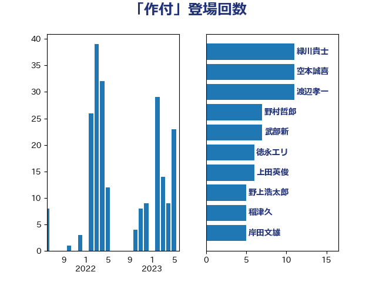

単語「作付」

| 緑川貴士 | 立憲民主党 | 11 回 |
| 空本誠喜 | 日本維新の会 | 11 回 |
| 渡辺孝一 | 自由民主党 | 11 回 |
| 野村哲郎 | 自由民主党 | 7 回 |
| 武部新 | 自由民主党 | 7 回 |
| 徳永エリ | 立憲民主党 | 6 回 |
| 上田英俊 | 自由民主党 | 6 回 |
| 野上浩太郎 | 自由民主党 | 5 回 |
| 稲津久 | 公明党 | 5 回 |
| 岸田文雄 | 自由民主党 | 5 回 |
| 野中厚 | 自由民主党 | 4 回 |
| 田村貴昭 | 日本共産党 | 3 回 |
| 玉木雄一郎 | 国民民主党 | 3 回 |
| 池畑浩太朗 | 日本維新の会 | 3 回 |
| 長友慎治 | 国民民主党 | 2 回 |
| 簗和生 | 自由民主党 | 2 回 |
| 福島伸享 | 無所属 | 2 回 |
| 石川香織 | 立憲民主党 | 2 回 |
| 庄子賢一 | 公明党 | 2 回 |
| 五十嵐清 | 自由民主党 | 2 回 |
| 金子恵美 | 立憲民主党 | 1 回 |
| 道下大樹 | 立憲民主党 | 1 回 |
| 谷合正明 | 公明党 | 1 回 |
| 西野太亮 | 自由民主党 | 1 回 |
| 舟山康江 | 国民民主党 | 1 回 |
| 紙智子 | 日本共産党 | 1 回 |
| 竹詰仁 | 国民民主党 | 1 回 |
| 秋葉賢也 | 自由民主党 | 1 回 |
| 神谷裕 | 立憲民主党 | 1 回 |
| 神田潤一 | 自由民主党 | 1 回 |
| 泉健太 | 立憲民主党 | 1 回 |
| 市村浩一郎 | 日本維新の会 | 1 回 |
| 山田勝彦 | 立憲民主党 | 1 回 |
| 小沼巧 | 立憲民主党 | 1 回 |
| 宮崎雅夫 | 自由民主党 | 1 回 |
| 和田有一朗 | 日本維新の会 | 1 回 |
| 古川康 | 自由民主党 | 1 回 |
| 古屋範子 | 公明党 | 1 回 |
| 北神圭朗 | 無所属 | 1 回 |
| 勝俣孝明 | 自由民主党 | 1 回 |
| 住吉寛紀 | 日本維新の会 | 1 回 |
| 仁木博文 | 無所属 | 1 回 |
| 下野六太 | 公明党 | 1 回 |